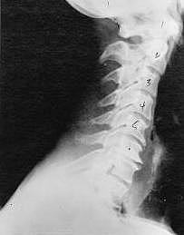

Subluxation Treatment
What is Subluxation?
In a pain free spine, the 24 vertebrae plus the sacrum and coccyx bone normally stack on top of one another in a centered alignment. Life experiences of all kinds impose forces of movement that often move one or more vertebrae away from this ideal, centered alignment. This misalignment of one vertebrae in relation to the next is called a subluxation. A subluxation can cause pain, because when the bones move they press on nerves that exit out holes provided by the interface between two adjacent vertebrae.So, a subluxation is the condition of adjacent spinal bones being out of alignment with respect to one another. Because nerves exit the spaces created between two adjacent vertebrae, a subluxation may cause a pinched nerve, and pain.
In more technical terms, a subluxation is "a motion segment, in which alignment, movement integrity, and/or physiological function are altered, although contact between joint surfaces remains intact"
Subluxation Degeneration
Near Normal
 This is a side x-ray view of the neck. As with all the pictures you will see on this page, the patient is looking to the right of the screen, so you are viewing the right side of their neck. We will call this picture a "near normal" spine. Compare this spine with the ones you will see below on this page. Notice the normal forward curve of the neck. This curve helps absorb shock. Notice how each of the disc spaces between C2 (second bone in neck) and C7 are thick and even, this again is normal. Also notice how the front portions (right on the x-ray) of each of the vertebrae (called the 'body' of the vertebrae) are fairly square with clear and well defined borders. This type of arrangement is normal in the neck. Normal vertebrae in other parts of the spine also have similar characteristics to what we see here. When subluxations occur and are left uncorrected, ongoing relentless changes occur that result in damage to the structure and function of the spine along with nerve damage and the resulting problems caused from improper nerve supply.
This is a side x-ray view of the neck. As with all the pictures you will see on this page, the patient is looking to the right of the screen, so you are viewing the right side of their neck. We will call this picture a "near normal" spine. Compare this spine with the ones you will see below on this page. Notice the normal forward curve of the neck. This curve helps absorb shock. Notice how each of the disc spaces between C2 (second bone in neck) and C7 are thick and even, this again is normal. Also notice how the front portions (right on the x-ray) of each of the vertebrae (called the 'body' of the vertebrae) are fairly square with clear and well defined borders. This type of arrangement is normal in the neck. Normal vertebrae in other parts of the spine also have similar characteristics to what we see here. When subluxations occur and are left uncorrected, ongoing relentless changes occur that result in damage to the structure and function of the spine along with nerve damage and the resulting problems caused from improper nerve supply.
Phase One Subluxation Degeneration
Phase One Subluxation Degeneration is seen in subluxations that have been present for up to twenty years. This phase is characterized with a loss or change in the normal curve in the spine. On this example you can see that the normal forward (lordotic) curve is lost. This spine even has developed a reverse curve in the neck. The disc spaces have also begun to exhibit a slight change in shape. One good point is that the bodies of each of the vertebrae (the square part in front) still exhibits clean clear borders. Segmental motion may be abnormal but overall motion is probably not affected. Chiropractic reconstructive care for a phase one can take from 6 to 18 months. More than 80% of people with Phase One Subluxation Degeneration have no pain. Therefore, if left uncorrected, phase one continues to progress with time until it eventually reaches the next phase.
Phase Two Subluxation Degeneration
Phase two subluxation degeneration is normally seen in subluxations that have been present between 20 and 40 years. This phase has some of the same characteristics of the previous phase including a loss of normal curvature and position as well as an alteration in segmental motion. In addition, spines with Phase Two Subluxation Degeneration many times show a reduction in the patient's range of motion in that area. X-rays of a phase two begin to show calcium changes or buildup at certain levels of the spine. These changes are sometimes called by many names including spurs and arthritis. Disc spaces between the affected vertebrae are noticeably narrower and may appear to be flattening out. Although most people with Phase Two Subluxation Degeneration may not exhibit any symptoms, some may start to feel stiff or achy. Chiropractic reconstructive care for patients in phase two ranges from 1.5 years to 2.5 years. Again, if Phase Two Subluxation Degeneration is left uncorrected it slowly advances to the next phase
Phase Three Subluxation Degeneration
Phase Three Subluxation Degeneration is caused by subluxations that have been continuing on for between 40 and 65 years. This phase has all of the attributes of the previous phases, only worse. The curvatures are abnormal, the disc spaces are vastly decreased and changed. Calcium changes on the spine are abundant in this phase. Normally, people in phase three have a restricted range of motion and probably exhibit symptoms of some kind. In phase three the vertebrae show obvious changes and mutations in shape. Projections made of calcium, sometimes referred to as "spurs or lipping", can be readily seen on x-ray. Chiropractic reconstructive care for patients in phase three ranges from 2.5 years to 3.5 years. This does not mean that at the end of this time that any or all of the calcium changes will be gone. In many instances the body adapts to the presence of the calcium and positive changes can only be measured from a functional standpoint. As before, if Phase Three Subluxation Degeneration is left unchecked it slowly advances onward into the next phase.
Phase Four Subluxation Degeneration
Phase four subluxation degeneration is seen with subluxations that have been raging on uncorrected or altered for over sixty five years. Phase four is a grave condition that will negatively affect the patients longevity and quality of life. The massive amount of neurological damage caused by years of subluxation that have lead to phase four are probably taking a serious toll on this person's health status. X-rays in phase four show serious severe structural changes. Vertebrae exhibit massive calcium changes, disc spaces appear blurred, and the bones themselves appear fused. In this scenario the patient will have a severe restriction of range of motion in addition to probably a number of other health issues. Reconstruction may not be possible in phase four, but care can be directed to some reduction in subluxation with the goal of improvement in the quality of life remaining. Patients in Phase Four Subluxation Degeneration have a serious situation both structurally and neurologically, but they are certainly not beyond hope. Many patients in phase four report significant improvements in symptoms, conditions, mobility and quality of life.